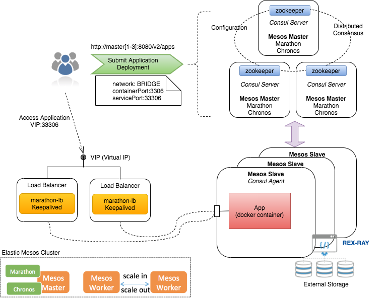
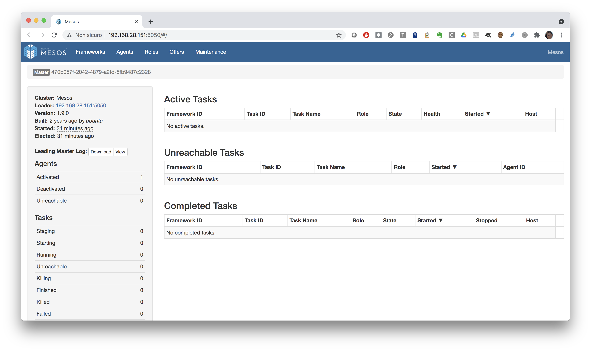
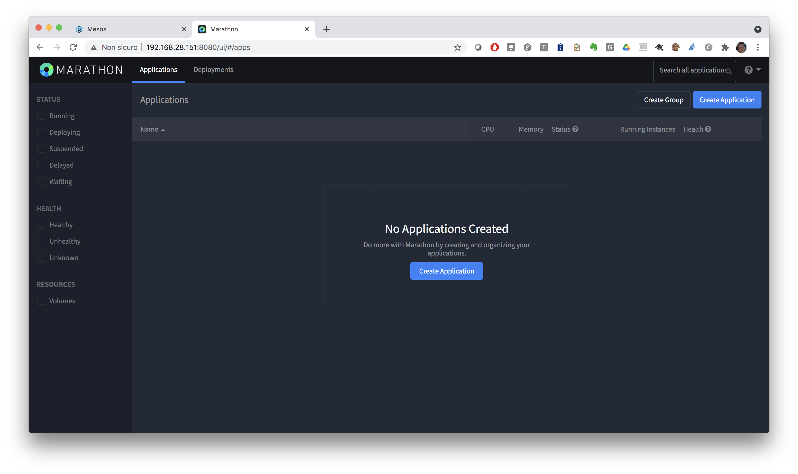
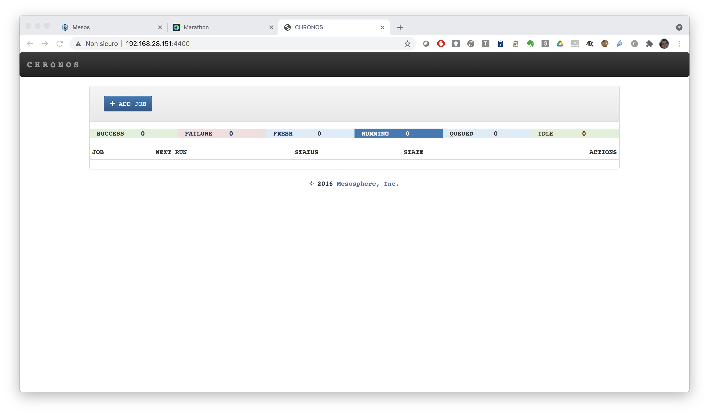

Introduction
Description of the mini-cluster¶
A typical production installation of a Mesos cluster is shown in the following diagram:

For this tutorial we will be using an all-in-one installation of Mesos/Marathon/Chronos.
This is the docker compose file used to setup the mini-cluster:
version: '3.7'
services:
zookeeper:
image: indigodatacloud/zookeeper
expose:
- 2181
environment:
- MYID=1
- SERVERS=localhost
volumes:
- ./var/log/zookeeper:/var/log/zookeeper
- ./var/lib/zookeeper:/var/lib/zookeeper
mesosmaster:
image: marica/mesos-master:1.11.0
ports:
- 5050:5050
environment:
- MESOS_HOSTNAME=192.168.28.196
- MESOS_CLUSTER=Mesos
- MESOS_ZK=zk://zookeeper:2181/mesos
- MESOS_LOG_DIR=/var/log/mesos
- MESOS_QUORUM=1
- MESOS_WORK_DIR=/var/lib/mesos
- MESOS_OFFER_TIMEOUT=30secs
volumes:
- ./var/log/mesos:/var/log/mesos
- ./var/lib/mesos:/var/lib/mesos
depends_on:
- zookeeper
mesosslave:
image: marica/mesos-agent:1.11.0
ports:
- 5051:5051
pid: host
privileged: true
environment:
MESOS_MASTER: zk://zookeeper:2181/mesos
MESOS_CONTAINERIZERS: docker,mesos
MESOS_PORT: 5051
MESOS_RESOURCES: ports(*):[11000-11999]
MESOS_WORK_DIR: /tmp/mesos
MESOS_HOSTNAME: 192.168.28.196
volumes:
- /sys/fs/cgroup:/sys/fs/cgroup
- /var/run/docker.sock:/var/run/docker.sock
- /tmp/mesos:/tmp/mesos
- ./var/log/mesos:/var/log/mesos
depends_on:
- zookeeper
- mesosmaster
chronos:
image: indigodatacloud/chronos:3.0.2_gpu
ports:
- 4400:4400
environment:
- CHRONOS_HOSTNAME=192.168.28.196
- CHRONOS_HTTP_PORT=4400
- CHRONOS_MASTER=zk://zookeeper:2181/mesos
- CHRONOS_ZK_HOSTS=zk://zookeeper:2181
- CHRONOS_ZK_PATH=/chronos/state
- CHRONOS_MESOS_FRAMEWORK_NAME=chronos
depends_on:
- zookeeper
- mesosmaster
marathon:
image: marica/marathon:1.8.244
ports:
- 8080:8080
environment:
- MARATHON_HOSTNAME=192.168.28.196
- MARATHON_HTTP_PORT=8080
- MARATHON_MASTER=zk://zookeeper:2181/mesos
- MARATHON_ZK=zk://zookeeper:2181/marathon
- MARATHON_FRAMEWORK_NAME=marathon
depends_on:
- zookeeper
- mesosmaster
marathon_lb:
image: mesosphere/marathon-lb:v1.14.1
command: sse --marathon http://marathon:8080 --group external
ports:
- "10000-10100:10000-10100"
environment:
- PORTS=9090
depends_on:
- marathon
Start the cluster:
cd /opt/mesos
docker-compose up -d
docker-compose ps
Name Command State Ports
-------------------------------------------------------------------------------------------------------
mesos_chronos_1 /entrypoint.sh Up 0.0.0.0:4400->4400/tcp,:::4400->4400/tcp
mesos_marathon_1 /entrypoint.sh marathon Up 0.0.0.0:8080->8080/tcp,:::8080->8080/tcp
mesos_mesosmaster_1 /entrypoint.sh /usr/sbin/m ... Up 0.0.0.0:5050->5050/tcp,:::5050->5050/tcp
mesos_mesosslave_1 /entrypoint.sh /usr/sbin/m ... Up 0.0.0.0:5051->5051/tcp,:::5051->5051/tcp
mesos_zookeeper_1 /entrypoint.sh /usr/share/ ... Up 2181/tcp
5050 of your machine:

Tip
Use the following command to get the ip of your VM:
ip a show ens3
Open a new tab of your browser and connect to Marathon on port 8080 of your machine:

Finally in another tab connect to Chronos on port 4400 of your machine:
